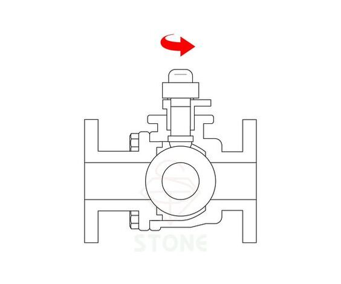
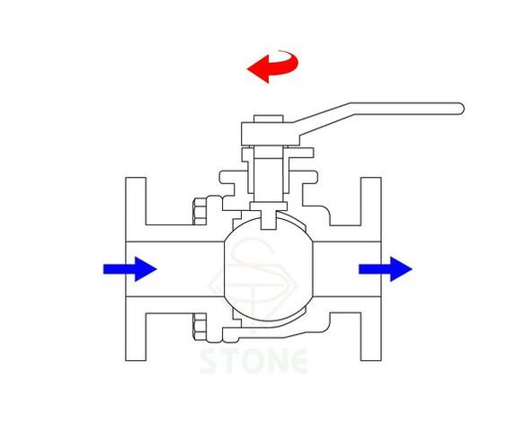
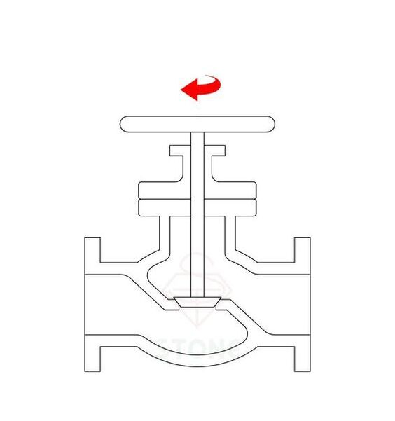
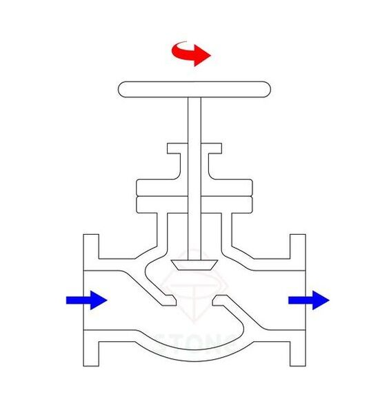
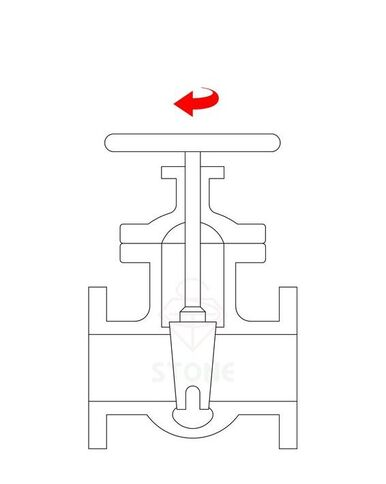
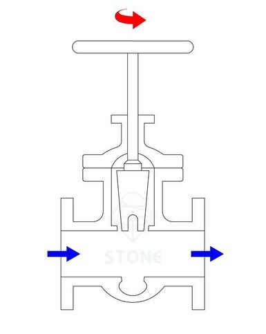
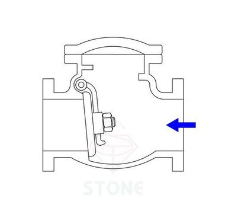
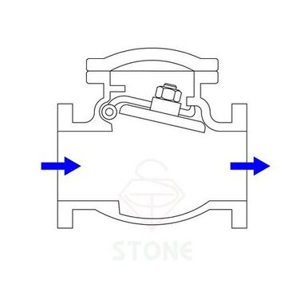
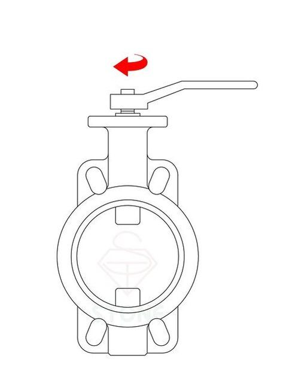
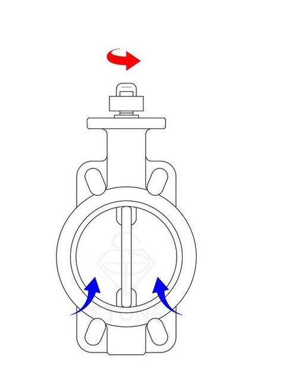

閥門為流體運輸系統中重要的調節裝置，基本可控制流體的開關、流量和流向等功能。
閥門的種類及規格繁多，不同的工作環境和工作需求所使用的閥門也不相同，
以下說明5種常見閥類的工作原理及優缺點。
球閥（Ball valve）
又稱球塞閥，為一種常見的主要閥類，是由塞閥改良而來，以球體取代柱塞。球體設有一貫穿孔，旋轉球體可控制貫穿孔與流道的配合以調整閥門啟閉。閥座可依工作條件選用適合的材質，因密封性佳且構造簡單易於操作及維修而廣泛運用。


優點：
- 密封性高
- 直通流道阻力小
- 口徑尺寸多樣，配合範圍廣
- 可作多孔應用，例如三通球閥
缺點：
- 金屬球體製造成本較高
- 流體含雜質或顆粒較大時，球體和閥座易受損
球型閥（Globe valve）
因外形似球而稱之，以閥板與閥座之配合開啟或關閉流道，常用於截斷及節流。閥體內流道呈S型，流體經過時將改變流向，使阻力增加故流體壓力下降。


優點：
- 工作行程小，啟閉時間短
- 流體截斷及流量控制能力佳
- 密封面磨擦力小，耐用度高
缺點：
- 流體壓力因阻力而降低
- 閥門操作時需要較大的力
- 不適用含沉澱物及黏性流體
閘閥（Gate valve）
利用閥桿帶動閘板做直線運動，以閘板升降開啟或關閉流道。閘板半開使用時，流體衝擊閘板易造成閥座震動而損傷，故不適合節流使用，僅適用全開或全關場合。


優點：
- 兩端面之間距離較短
- 直通流道阻力小
- 流體與閘板呈垂直，啟閉所需的力較小
缺點：
- 僅適用於全開或全關之場合
- 閘板行程高，操作時上方所需空間較大
- 開啟和關閉所需時間較長
止回閥（Check valve）
又稱逆止閥、單向閥，顧名思義僅允許流體單向流通，一方向流體壓力作用下，即閥瓣開啟使流道暢通；反之，當另一方向流體壓力作用時，閥瓣即關閉達到防止倒流之效果。


優點：
- 構造簡單，易於操作及維修
- 防止流體倒流，保持單向流動
缺點：
- 安裝時須注意流體方向
- 若壓力過小可能影響截斷能力
- 瞬間啟閉可能使閥瓣撞擊受損
蝶閥（Butterfly valve）
又稱蝶型閥，控制閥板旋轉角度即可調整啟閉及流量。蝶閥可分為彈性密封及金屬直接密封，彈性密封是利用膠圈防漏，低壓密封性好，但膠圈有溫度及壓力上的限制；金屬直接密封是以金屬面直接接觸，工作溫度範圍較廣。
參考連結 - 球閥球墊、閥座、蝶閥交圈材質選用參考


優點：
- 構造簡單且安裝方便
- 體積和重量皆小於其他同口徑閥門
- 流通口徑大，阻力小
缺點：
- 流通口徑大，不適用小流量控制
- 密封膠圈易受工作溫度及壓力影響